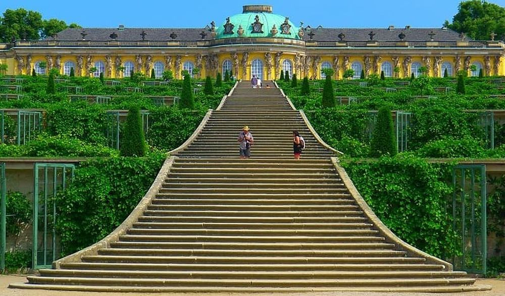

Descoperă Potsdam - O incursiune în orașul palatelor
Potsdam este un oraș plin de palate și grădini magnifice din Germania, oferind o gamă variată de atracții pentru vizitatori:
-

Palatul Sanssouci - Eleganță regală
Acest palat baroc este înconjurat de grădini splendide și reprezintă o comoară arhitecturală și istorică.
-

Neues Palais - Grandiositate imperială
Acest palat imens ilustrează puterea și rafinamentul monarhiei prusace.
-

Palatul Sacrow - Arhitectură clasică
Această bijuterie arhitecturală se află pe malul râului Havel și oferă priveliși deosebite.
-

Parcul Sanssouci - Oază verde
Grădinile și parcurile din Potsdam completează atmosfera palatelor cu spații naturale impresionante.
-

Cartierul olandez - Influente culturale
Acest cartier pitoresc găzduiește case cu arhitectură tipică olandeză și oferă o atmosferă distinctă.
Concluzii
Potsdam este un oraș în care istoria regală și frumusețea naturală se îmbină armonios, oferind o experiență memorabilă.